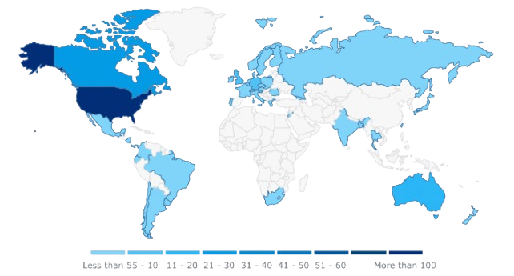

Who is who - Anthropology of Akira
Akira group, most likely named after the Japanese cyberpunk film Akira (forbidden in Russia) has recently become one of the most prolific Ransomware as a Service (RaaS) groups in the field of cybercrime. First appearance of the Akira group was registered approximately in March 2023. As of 29th of November, there are, according to ransomware.live website, 426 known victims of the Akira group. Given these numbers, Akira group breaches about 53 companies per month animating its incredible productivity. The group was so far most active in the USA and usually goes after SMEs, which are generally easier targets due to weaker cyber-security. These organizations are often viewed as "softer targets" that are willing to pay up as they usually do not have sufficient budget to invest into proper cyber security measures.

Resemblance to Old Conti Group
Akira Group strongly resembles the Russian-based Conti Group that was partly exposed in early 2022. Akira's tactics, techniques, and procedures (TTPs) were similar to those outlined in Conti's leaked playbook. While other groups could be simply inspired by the playbook, further malware analysts have shown several code similarities between Conti and Akira ransomware, such as the list of file types and directory exclusions, the structure of the file extension, and the code for key generation. Examples of negotiation chats between Akira and their victims revealed that Akira operators use a script to begin negotiations just as Conti did, demonstrating behavioral similarity in campaign style and how they conduct operations. Most importantly, blockchain analysis of Akira’s Bitcoin transactions revealed that on at least three occasions, Akira operators have sent ransom funds to addresses affiliated with known Conti wallets.
Shook Lin & Bok Case
Shook Lin & Bok, originally established in 1918, is a prominent full-service law firm with an office in Singapore that became one of Akira's victims in April 2024. Because the investigations are still ongoing, it is yet unknown to the public how exactly Akira breached the company. Nevertheless, it is known that Akira left a ransom note (Appendix A) with a unique link and password to a secured chatroom to negotiate. Akira did also post exfiltration analysis of Shook Lin & Bok's bank statements, net income, cyber liability limits, and financial audits to estimate the most suitable ransom price. Initially, for 2,000,000$ Akira offered:
- Full decryption assistance
- Evidence of data removal
- Security report on vulnerabilities they found
- Guarantees not to publish or sell the data
- Guarantees not to attack the company in the future
In the end, after a week of negotiations, Shook Lin & Bok managed to negotiate a $600,000 discount but still decided to pay a $1,400,000 ransom. Shook Lin & Bok negotiator communicating with Akira group stated multiple times that publishing data would be an automatic deal breaker. Therefore, the assumption is that Shook Lin & Bok management decided to pay, as leakage of confidential client information could not only undermine proceedings of their cases but open other lawsuits against the firm for insufficient data protecting measures, potentially resulting in bigger costs than the ransom itself.
Akira, as many other groups do, employed double extorsion (exfiltrating data first, then encrypting it) and thanks to it, managed to pressure Shook Lin & Bok by threatening to sell or publish the data. This is often the main reason and decisive factor for victims to pay. Therefore, it is important to understand that just having a recoverable data backup, or available decryption tool, does not solve the whole issue when company is attacked. Exposure of sensitive data can not only debilitate company operations but open doors to scrutiny from stakeholders and state authorities.
Ethical Dilemma
While it is not illegal in Singapore to pay a ransom, moral question arises: is it ethical for a law firm to submit to extortion, effectively giving up money for criminal groups? Singapore authorities, in general, do not recommend paying ransom as successful payments just further encourage and enables the threat actors. Mistake of the Shook Lin & Bok negotiator was to believe that chats were a safe and private space to communicate with the attacker. The facts that the chats were leaked, whether by some whistleblower in the company or the Akira group demonstrated the exact opposite. Furthermore, the company cannot be sure about Akira's guarantees and is only left to believe that Akira does not still have a copy of its data.
Conclusion & Takeaways
The Shook Lin & Bok is another case that illustrates the importance of robust cyber security measures and serves as a cautionary case for all organizations. Costs stemming from potential financial losses, disruption of operations, and reputational damages are usually higher than investments in cybersecurity. As threats evolve, so is the regulatory scrutiny. Therefore, organizations must prioritize comprehensive cybersecurity strategies that address every stage of potential breaches. These strategies should include not only technical security, but employee training, detailed incident response plans, and communication strategies to maintain client trust and company reputation. Cybersecurity is not only an emerging quality but a necessity. It should be viewed not only as a concern for IT but as a core component of the whole organization. Organizations that fail to acknowledge and act on this fact risk their viability. The Shook Lin & Bok case serves as another reminder that resilience against cyber threats is not optional, but essential for sustaining competitive advantage.